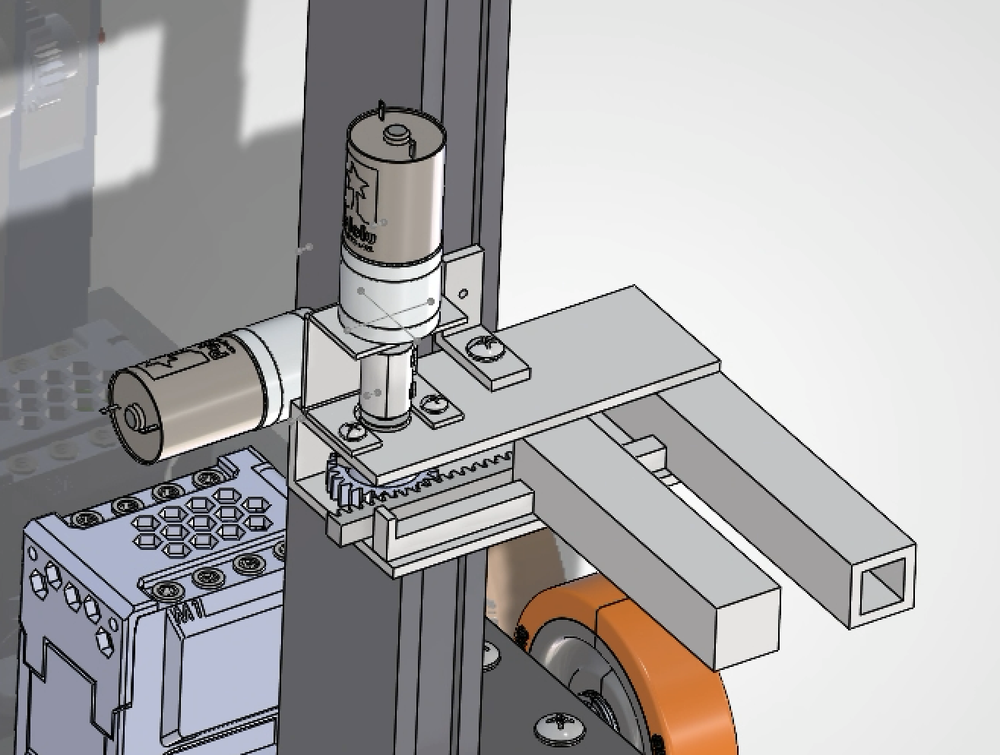

Robotic Machine Player
Sep. - Dec. 2025
Design
Challenge
The Robotic Machine Player had to perform a set of tasks that contributed to a team strategy in the Wild West competition. My team's requirements were:
- Knock down a weighted, bowling-pin-style target (~1 lb)
- Hang plastic hats onto hooks
Key Skills
SolidWorks · First Principle Analysis · Engineering Drawings · Manual Machining · Soldering
Personal
Contributions
CAD
Responsible for full CAD assembly of the forklift and claw mechanism, including fasteners and all manufactured parts.

